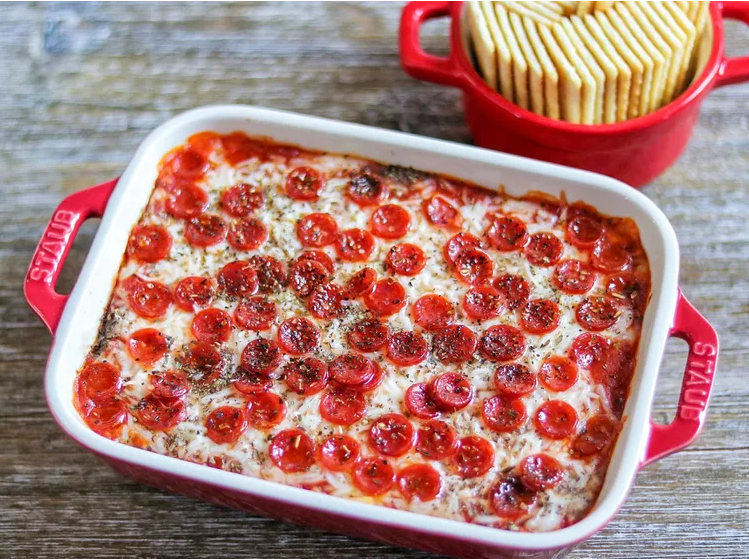

Pepperoni Pizza Dip

Description
Everything you love about pepperoni pizza... in dip form! This delicious, cheesy dip is done in under 30 minutes
and is perfect for game day.
Ingredients
- 1 (8 ounce) tub cream cheese, softened
- 1 cup shredded mozzarella cheese, divided
- ⅛ teaspoon garlic powder
- ⅛ teaspoon onion powder
- 1 ½ cups pizza sauce
Steps
- Preheat the oven to 350 degrees F (175 degrees C).
- Mix together cream cheese, half of the mozzarella cheese, garlic powder, and onion powder in a bowl. Spread
cream cheese mixture in the bottom of a small baking dish.
- Add pizza sauce over cream cheese mixture, spreading it into an even layer. Top with remaining mozzarella
cheese, followed by pepperoni. Sprinkle basil and oregano over everything.
- Bake in the pre-heated oven until the cheese has melted and the dip is thoroughly heated through, about 15
minutes. Serve with chips or crackers.
Homepage